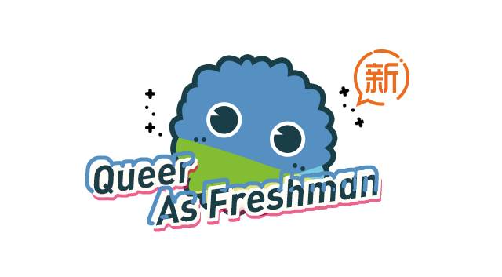
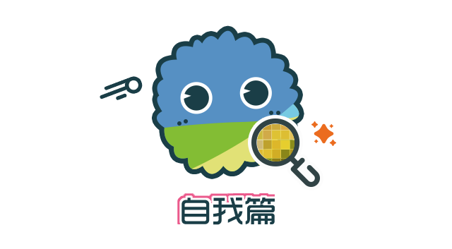
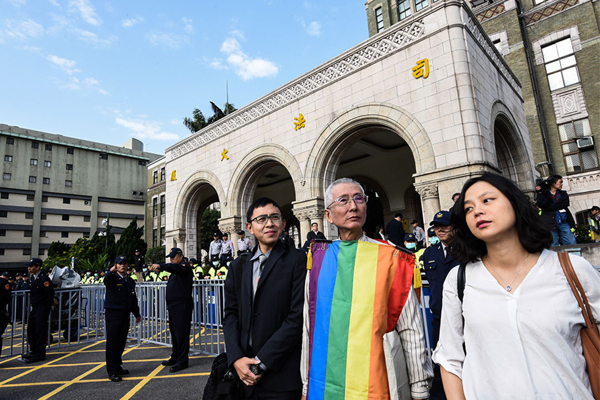

新生同志问题指南 | 自我篇

欢迎各位新生，尤其是作为性少数的你。
困惑和期待同时包含在你的性与性别身份中，包含在你对新生活的设想里。这篇指南要做的事，就是为你提供更多的可能性——在诸多不明朗的方向和单一的道路里，你还有这些选择，你的选择需要承担怎样的后果。但终究，路是你自己选择的，这正是“指南”的意义。
作为这份指南的第一批受众和获益者，我在3年后成为了它的修订者，并在此诚挚邀请你，勇敢地从它开始探索自己作为一个性少数或非性少数的无限未来。
—— Owen
▼
新生同志问题指南
原作者：烟玉暖阳 kiokio
修订人：Owen 烟玉暖阳 丸子 琉璃 Anna
排版：abcxyz 青雀 Dale 文文 Ray
统筹：雨林
鸣谢：皮皮 卡乐

▎同志是什么？
1989年，香港电影人林奕华创办“香港同志电影节”，“同志”从一个革命称谓逐渐转变为“同性恋”群体的代称。目前，这一词已不限于指称同性恋者，广义上已扩大为包括男同性恋者（Gay）、女同性恋者（Lesbian）、双性恋者（Bisexual）、跨性别者（Transgender）、酷儿（Queer）、间性者（Intersex）等在内的性少数群体的代称。本文中的“同志”即指后一种含义，而这篇指南也从2013年最初写作时“给（男）同性恋的指南”扩大为“给性少数群体”指南。
“性”的定义本身就是模糊和充满争议的，其中混杂了社会学意义和生物学意义的各种模糊地带，将人类分为简单地划分为男女两种性别无论在生物意义上还是在社会意义上都是不完备的。从生物学的角度看，人类的性染色除了XY、XX两种组合外还有其他的形式，性器官和性征的发育上也会出现同时拥有两套性器官或者性征不显著，脑性别与生理性别的不合拍更是导致了有的人心里住了一个与自己生理性别不一致的“灵魂”（即跨性别，合拍的情况则是顺性别）。从社会学的角度看，刚强对应男性、柔弱对应女性无论历史上还是现代生活中都有诸多的反例，任何一个人都只符合传统意义上男性标准的某一些，同时也会符合传统意义上女性标准的某一些。这些都意味着人类的性别很多层面上不会只有男女两种。
在情感关系及性关系上，男女两性结合并非是唯一的方式。一个人在情感、浪漫、与性上对N种性别有何种型态的耐久吸引，被称为性取向。当 N = 1 时，即是异性恋或者同性恋， N = 2 时是双性恋，当 N>= 3 时则可能是多性恋或者泛性恋，当然也有 N = 0 的情况，无性恋者对任何一种性别都没有性或者浪漫关系上的兴趣。

• 性别姜饼人v3.3
这些多元的性别与性取向既不是病也不心理问题，然而由于文化、政治、宗教等方面的原因，在某些国家与同性恋结合并视为“邪恶的”并被定罪，一些国家的人更是不能自由地选择自己以怎样的性别生活。然而平等作为一种普世价值是不言而喻的，迄今在联合国192个成员国中已有96个国家表态支持2011年关于LGBT权益的决议，以支持性少数人群的人权。

• 台湾大法官认为限定异性结合的民法违宪

Q：我如何确定我是什么性别和性向？
A：在性别、与性向的定义上，我们应该是概念的塑造者而不是概念的顺从者。我们可以去了解关于多元性别与性向方面的知识，在不伤害他人的前提下去探索自己的属性，而不必拘泥于各种条款。
Q：一个人性别、性向是固定不变吗？
A：多数情况下如此，但仍然存在性别、性向流动的情况。一些人可以通过性别重置手术或药物显著地改变自己的性征，还有一些人本身对自己的性别认同就是流动的。有一部分人的性向可能会随着时间和境遇发生改变，不过目前并未有证据表明这是可以由主观意志决定的也并非人人如此。
Q：同性恋需要治疗吗？
A：2001我国将同性恋从精神疾病的分类当中去除，同性恋不是“病”，也不需要治疗。目前没任何证据表示人工扭转性取向的各种手段有效的，如果你发现身边有所谓的“同性恋治疗”可以向卫生部门、或工商部门举报。2018年，跨性别去病理化也迈出关键性的一步，世界卫生组织发布的“国际疾病分类标准”第11版将跨性别“性别不和谐”的诊断从心理及行为章节中去除，这标志着世卫组织从此不再把跨性别归为精神障碍。
Q：跨性别者一定会“变性”吗？
A：有一部分跨性别者会通过性别重置手术来使得自己的性征与性别认同一致，或者使用性激素来维持自己需要的性征。也有的跨性别一直维持自己原有的生理性别。如果你是跨性别者，你可以寻找专门的跨性别公益组织或互助小组获得用药等方面的帮助，不规范地使用激素类药物很可能会对你的身体造成永久性伤害。进行性别重置手术前也需要做专业的评估，同时性别表达的转换也并非只是生理层面，性别气质的塑造、性别角色的扮演都属于性别的一部分，在这里，我们不妨对“性别”采取更多元开放和更富有想象力的看法，而非仅仅将性别局限于下体的生理结构。
Q：性少数人群真的更有才华吗？
A：尽管我们在艺术、设计等领域见到了一些公开身份的同性恋者、双性恋者、跨性别者等，但仅凭此就认为性少数人群更有才华并非一种褒扬而一种身份的绑架，这会让大众对性少数人群产生浪漫且不切实际的幻想，某种程度上阻碍了全体性少数的平等现身。一个人擅长什么是由多方面决定的。在我们用性别或性别的身份去看待某个族群的同时，也应该看到这个族群是由一个个独特的个体组成。
▎是否应该向他人出柜？
出柜，是指公开自己特别的性向或性别身份。我们都会有自己的友情、亲情等等，在情感中我们都渴望得到别人的认同，相应的应该给别人了解自己的机会。一个人是否认可你与你的性向及性别身份并无关系，只有彼此信任和沟通才是让一个人认同你支持你的方法。但是告知的对象应该是有选择性和目的性的，遵循友善为原则，需要根据不同的情况量力而行，没有必要告诉所有人。
从自己的亲密朋友，或者同年龄、同辈的人入手，相对容易获得他们的了解和认同，因为他们更容易接触和了解涉及性少数群体的信息。如果你清楚 ta 对性少数群体的态度，你们可以先试着讨论与此相关的话题，例如同性恋题材的电影、某些最近出柜的明星。或许这是考验你们情感是否真实的一种方式，只有真正的感情，才禁得住风吹雨打。
也许你身处的环境和你周围的人不能以平等、包容的眼光看待性少数群体，对此没有必要恐慌，因为人的认知水平是在不断发展的，而只要你不说就不会有人知道。这并不是说公开性向、性别身份不好，而是要基于自身环境考量，不急于公开是为了避免一些不必要的麻烦。你也可以通过努力改变自己的生活环境和周围的人让自己活得更好。
父母作为上一辈人，对多元性别和性向的认识可能不如我们。你要相信，真正爱你的父母比任何人都能接受你，他们只是多了一些担心，担心你的养老、健康等等。其实对父母对父母出柜并没有传闻中的那么难，只要父母开明、方法得当，跟父母出柜反而是一件很轻松的事，一般情况下只要你有独立生活的能力，就可以向父母出柜，而你要做就是想他们证明你有能力去用自己的方式得到幸福。跟父母出柜的方式有很多，比如写信或者面谈都可以，前提是需要跟父母有良好的沟通和融洽的关系，如果没有不妨先从这一步做起，让父母多感受到你的爱，主动关心一下他们，他们也会更主动的了解你，作为铺垫，要有意识的父母观看和了解关于性少数的资料。对此一位同志母亲言简意赅的总结出跟父母出柜的经验：循序渐进，坚持不懈。此外全国各地也已经有越来越多地同志父母站出来支持自己的子女，在网络上可以轻松的找到他们，参与到他们交流中也可以获得很多有用的帮助。
有时在自己非情愿的情况下，我们也会“被出柜”。比如有些人向自己心仪的同性直人（异性恋）表白之后，被对方在学校里公开性向；又或者一些同性情侣分手之后，有的人会采取报复性措施匿名公开他人的性向。不论哪种情况，公开他人隐私都是极其恶劣的行为。如果被出柜了，你又无法处理局面，可以向自己的好朋友、学校里或所在城市的性少数公益组织求助。如果周围的同学、老师没有太多不友好的言行，你大可泰然处之，也许你甚至会发现一些对性少数友好的人。同时我们建议平常多储备一些多元性别、性向的知识和性少数方面的资讯，万一有一天要跟那些不友好的人争论呢？又或者突然被父母发现了，也不至于措手不及。

• 酷儿论坛志愿者在校园内张贴海报

Q：什么时候向父母出柜合适？
A：在自己人格独立、经济独立的时候。前者意味着，你在与父母交流的时候不至于摇摆不定，你一时的妥协要为父母“改回去”很有可能会给他们造成二次伤害；后者则是避免父母断了你的生活费。另外多学习一些知识了解相关资讯也是必要的，毕竟有备无患。
跨性别者还涉及一些特别的事项，包括进行手术（需征得父母同意）、变更身份信息（身份证、户口信息等）等等。另外，在我国，虽然不承认有过性别更改的高等学历证书仍然是常态，但目前也已有跨性别者通过联系学信网、成功更改学历证书上性别信息的案例。因此，如果你希望将来进行性别重置手术以及更改身份信息，建议参考相关规定，谨慎打算。
Q：一定要向父母或周围的人出柜吗？
A：我们并不建议你盲目出柜，认同和接受自己的某个特征并不等同于要把这个特征公之于众。事实上，除了性少数身份，我们每个人身上都有诸多的秘密和特征，你可以自由选择是否公之于众或者告诉哪些人，衡量的标准在于：这个特征的暴露是否具有一定的危险性。就现有的出柜经验来看，越是向与自己没有直接利害关系的人出柜越是安全的，向家人出柜则风险系数较高。当然，出柜也并非没有好处，从个人的角度而言，你可以在你在乎的人面前站立起来，与你最亲近的人分享你的秘密，以自己喜欢的方式生活，从群体的角度而言，可以促使群体外的人对我们的即有偏见发生改变，让同志议题更加公开化。
Q：出柜之后父母不接受怎么办？
A：父母在短期内不接受你的性少数身份是很常见的，很多人也是跟父母做了很长期的工作才让他们接受自己，观念的改变不是一朝一夕的事。如果他们始终不接受，你也可以学会去接受“父母的不接受”，毕竟生活中除了性少数身份还有很多事情要面对。

由于指南的篇幅较长，阅读体验可能不太好。今年的推送，我们将尝试分期发送。并在后面几期中附上其他篇的链接。希望大家继续关注。下期预告：